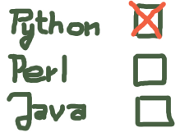
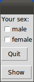
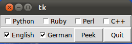

Checkboxes
Introduction
 Checkboxes, also known as tickboxes or tick boxes or check boxes, are widgets that permit the user to make multiple selections from a number of different options. This is different to a radio button, where the user can make only one choice.Usually, checkboxes are shown on the screen as square boxes that can contain white spaces (for false, i.e not checked) or a tick mark or X (for true, i.e. checked).
A caption describing the meaning of the checkbox is usually shown adjacent to the checkbox. The state of a checkbox is changed by clicking the mouse on the box. Alternatively it can be done by clicking on the caption, or by using a keyboard shortcut, for example the space bar.
A Checkbox has two states: on or off.
The Tkinter Checkbutton widget can contain text, but only in a single font, or images, and a button can be associated with a Python function or method. When a button is pressed, Tkinter calls the associated function or method. The text of a button can span more than one line.
Simple Example
The following example presents two checkboxes "male" and "female". Each checkbox needs a different variable name (IntVar()).from tkinter import * master = Tk() var1 = IntVar() Checkbutton(master, text="male", variable=var1).grid(row=0, sticky=W) var2 = IntVar() Checkbutton(master, text="female", variable=var2).grid(row=1, sticky=W) mainloop()If we start this script, we get the following window:

We can improve this example a little bit. First we add a Label to it. Furthermore we add two Buttons, one to leave the application and the other one to view the values var1 and var2.
from tkinter import *
master = Tk()
def var_states():
print("male: %d,\nfemale: %d" % (var1.get(), var2.get()))
Label(master, text="Your sex:").grid(row=0, sticky=W)
var1 = IntVar()
Checkbutton(master, text="male", variable=var1).grid(row=1, sticky=W)
var2 = IntVar()
Checkbutton(master, text="female", variable=var2).grid(row=2, sticky=W)
Button(master, text='Quit', command=master.quit).grid(row=3, sticky=W, pady=4)
Button(master, text='Show', command=var_states).grid(row=4, sticky=W, pady=4)
mainloop()
The result of the previous script looks like this:

If we check "male" and click on "Show", we get the following output:
male: 1, female: 0
Another Example with Checkboxes
We write an application, which depicts a list of programming languages, e.g. ['Python', 'Ruby', 'Perl', 'C++'] and a list of natural languages, e.g. ['English','German'] as checkboxes. So it's possible to choose programming languages and natural languages. Furthermore, we have two buttons: A "Quit" button for ending the application and a "Peek" button for checking the state of the checkbox variables.
#!/usr/bin/python3
from tkinter import *
class Checkbar(Frame):
def __init__(self, parent=None, picks=[], side=LEFT, anchor=W):
Frame.__init__(self, parent)
self.vars = []
for pick in picks:
var = IntVar()
chk = Checkbutton(self, text=pick, variable=var)
chk.pack(side=side, anchor=anchor, expand=YES)
self.vars.append(var)
def state(self):
return map((lambda var: var.get()), self.vars)
if __name__ == '__main__':
root = Tk()
lng = Checkbar(root, ['Python', 'Ruby', 'Perl', 'C++'])
tgl = Checkbar(root, ['English','German'])
lng.pack(side=TOP, fill=X)
tgl.pack(side=LEFT)
lng.config(relief=GROOVE, bd=2)
def allstates():
print(list(lng.state()), list(tgl.state()))
Button(root, text='Quit', command=root.quit).pack(side=RIGHT)
Button(root, text='Peek', command=allstates).pack(side=RIGHT)
root.mainloop()
The window looks like this:
